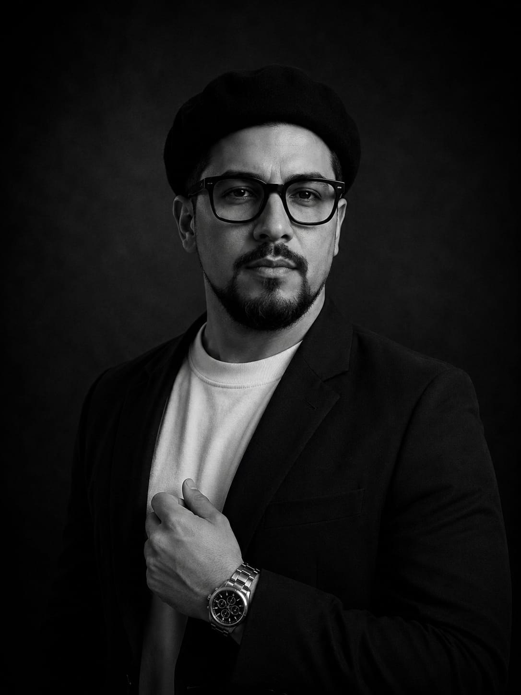
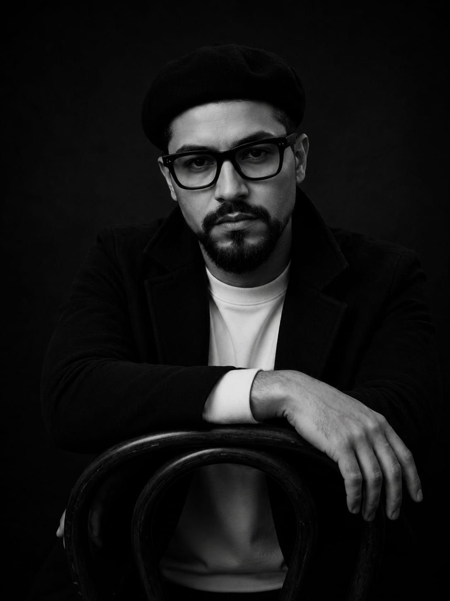
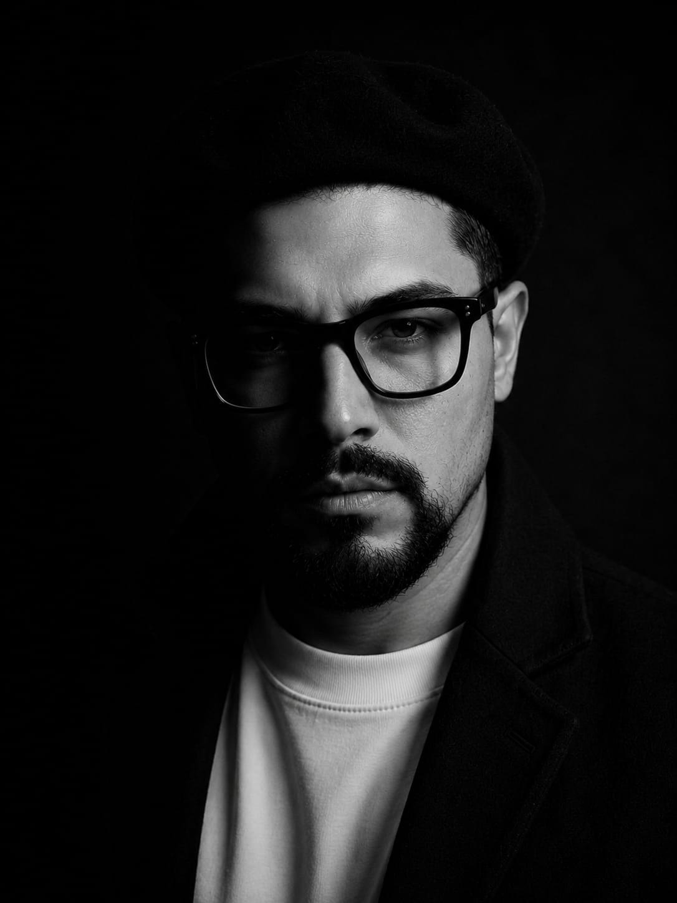
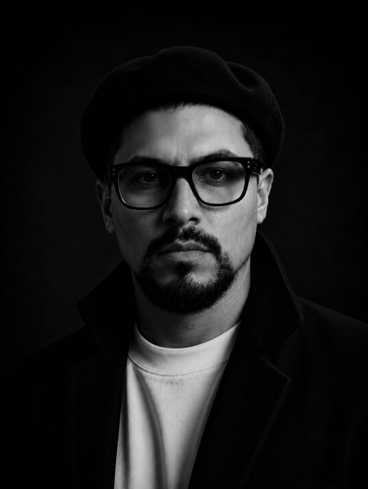
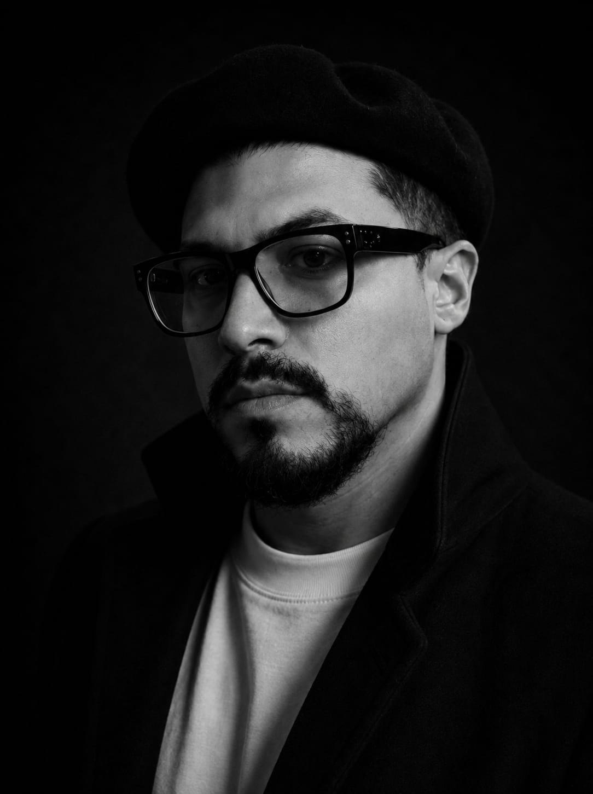
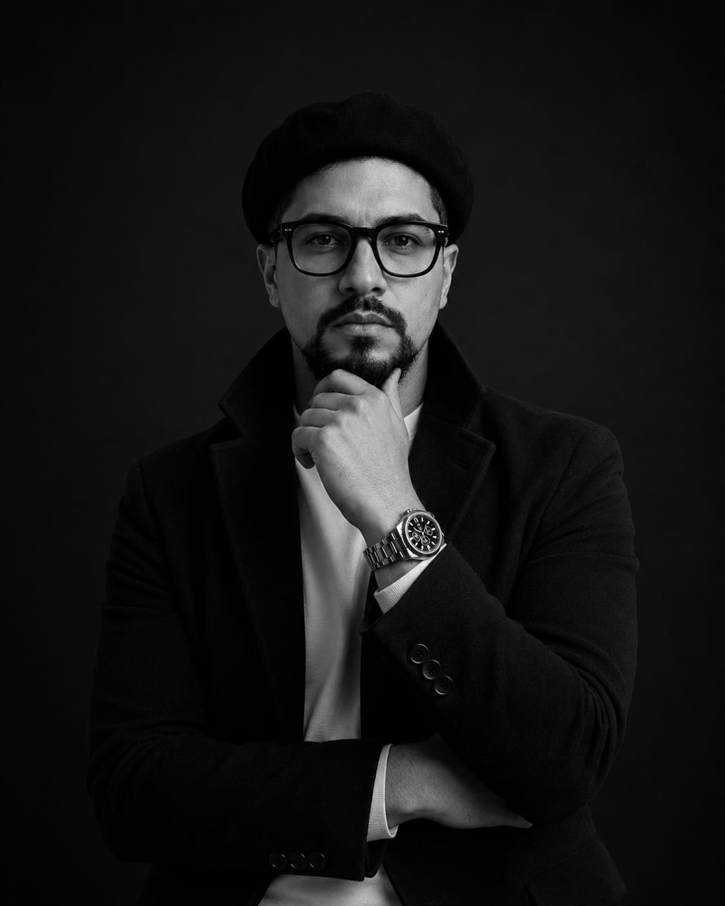
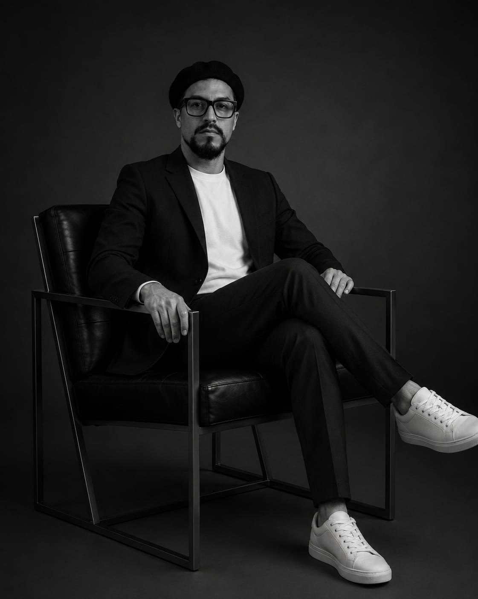
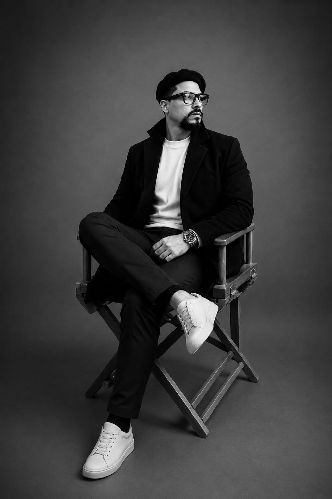
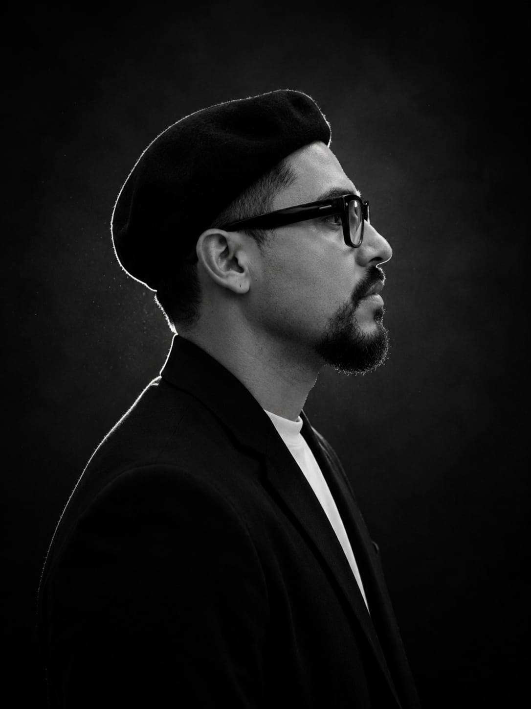
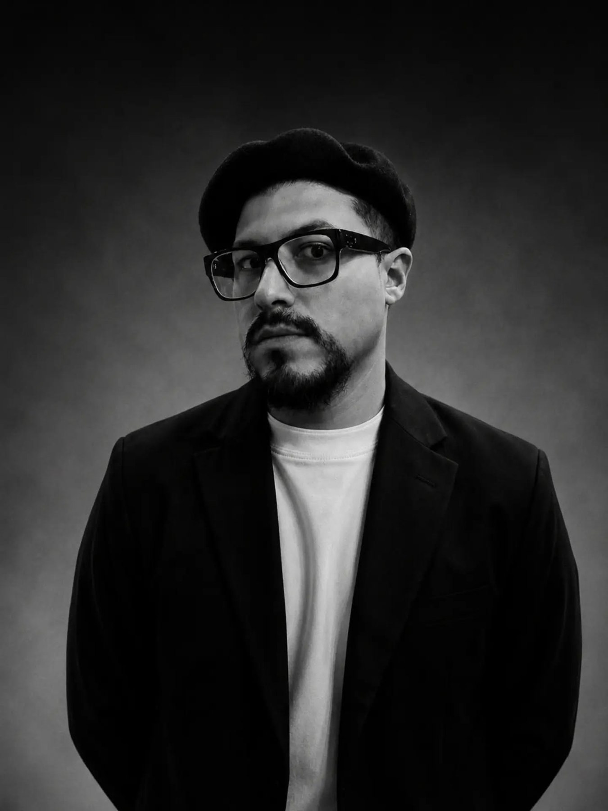

ANDRADE ORTIZ · INVESTIGACIÓN
Retratos profesionales para la identidad visual de la plataforma.
RETRATOS PROFESIONALES
Una selección de retratos en blanco y negro para acompañar la presentación profesional, las publicaciones y las actividades académicas de este espacio.









